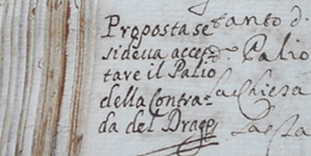

|
|
 |
28 giugno 1682
domenica
DRAGO
|
- prima di iniziare la lettura, si consiglia di leggere l'introduzione -
Da un attento esame delle pagine della Biccherna1, emerge che la scelta di far disputare questo Palio, l'unico riconosciuto dal Comune per il 1682, deve essere stata presa soltanto pochi giorni prima della data stabilita, poiché nella delibera del 6 giugno2, l'unico ragguaglio che abbiamo è riferito a quello del "li 2 stante giorno di Luglio".
Infatti, per avere conferma della volontà di effettuare questo Straordinario, bisognerà attendere il 21 giugno quando, anticipando di quattro giorni la delibera di Biccherna, il "Sig. Gio:Batta Leonetti, disse che come habitatore della Contrada del Drago esponeva haver sentito da molti habitatori, haver desiderio di volersi esporre alle due Corse del Palio, da farsi in breve, una dal Inclita Natione Alemanna, per la nascita del Secondo Genito del Imperatore, e l’altra per la Visitazione della Beatissima Vergine Maria"3.
E fu proprio il Drago, che probabilmente si era ripresentato in Piazza dopo un'assenza durata ben 32 anni (mancando dal 1650 ogni tipo di attestazione per eventuali partecipazioni al Palio), che conquistò un bacile d'argento che venne poi offerto, come diventerà prassi, alla Compagnia di San Domenico in Campo Regio, la quale lo vendette dopo pochi mesi4.
La Contrada riceveva dei sussidi dalla Compagnia, senza i quali non avrebbe potuto partecipare al Palio, ma in cambio la stessa Compagnia esigeva, in caso di vittoria, che gli fosse donato il premio, libera di tenerlo oppure di cederlo.
Questo accadde anche per i Palii vinti nel 1717, 1724 e 1729; ma con quello successivo del 2 Luglio 1738 ogni rapporto si interruppe, poiché il Capitano del Drago, Simon Pietro Contri, si rifiutò di consegnare il premio alla Compagnia, affermando che era di proprietà degli abitanti del rione.
Il Comune riconosce ufficialmente la vittoria del 28 giugno 1682, che venne forse conseguita da Pavolino o, come indicato dal Bandini, da un certo Piaggia.
Fra le consorelle protagoniste vi furono anche l'Oca5 e la Tartuca6.
La vittoria del Drago riscosse il plauso della Nazione Alemanna perché, come racconta Silvio Griccioli7, moltissimi di costoro abitavano nel territorio della Contrada.
Che si sappia, questa è stata l'unica volta che le Contrade, dopo essersi radunate nel Prato di S.Domenico, siano entrate in Piazza dal Chiasso Largo (come era in uso per le bufalate), anziché dalla Bocca del Casato8.

NOTE:
[1] ASS, Biccherna 889, 25 giugno 1682, cc. 17v e 18
[2] ASS, Biccherna 889, 6 giugno 1682, c. 15
[3] ASS, Patrimonio Resti 703, Compagnia di S.Domenico in Campo Regio, c. 236v
[4] ASS, Patrimonio Resti 703, Compagnia di S.Domenico in Campo Regio, cc. 236v, 237, 238, 238v e 243
[5] ACOc, Deliberazioni 1667-1745, libro C, c. 51
[6] ACTa, Libri Primo deliberazioni 1666-1702, cc. 14 e 14v
[7] Silvio Griccioli nacque a Monastero il 7 gennaio 1879, pertanto le cronache di questi anni da lui trascritte riprendono i testi di altri autori.
[8] ACAq, Silvio Griccioli, Palii descrizione dal 1581 al 29 giugno 1717, 1R, c. 37v

ABBREVIAZIONI BIBLIOGRAFICHE


RIEPILOGO
VITTORIE
DAL 1633
AL 1691

|
|
|